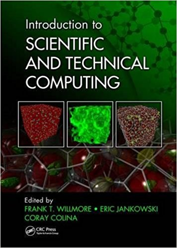
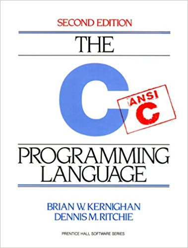
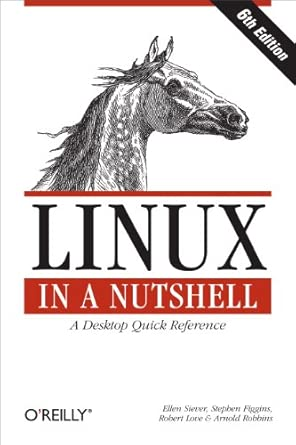
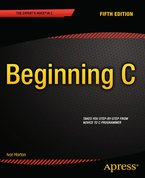
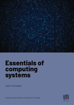

Course Summary
In this course you will be introduced to the fundamentals of C programming, the Linux operating system environment, development of computational tools for aerospace analysis and design, and technical report writing. The emphasis of the course is on learning best practices that form the basis for modern professional engineering. Therefore, the course will use the tools and processes that are most common in industry today, emphasizing good documentation and version control.
This course is intended to be a fun, interactive introduction to applying
computational analysis in the context of real-world systems. Hands-on learning, through the use of industrial techniques in labs/homeworks, will be emphasized. We will learn the computational tools and techniques used at NASA, Boeing, Rockwell Collins, Honeywell, Airbus, Mathworks, and others with an emphasis on professional workflow and engineering best practices.
Course Syllabus and University Integrity Policy
Textbooks
|

|
Required; Use this for:
- git and github
- bash scripting
- linux operating system/command line overview
- debugging with gdb
- makefiles, libraries, linking, and build management with make
- prototyping
- machine numbers and the IEEE 754 floating-point standard
|
|

|
Required; Use this for:
- all things related to C programming!
- scientific computing implementation
|
|

|
Optional; Use this for:
- emacs
- bash scripting
- linux operating system/command line overview
- regular expressions, pattern matching
- awk and sed
|
|

|
Optional; Use this for:
- supplemental material and exercises related to C programming
- This is one of many optional supplemental books available.
- Do not buy this book; it is available free through ISU library!
|
|

|
Optional; Use this for:
- supplemental material related to computing (versus calculating), memory, and computer organization (and how these affect the execution, performance, and correctness of programs)
- This is one of many optional supplemental books available.
- This (short) book is available free HERE!
|
Many students ask about books for learning C++.
Tools
You may either install these tools on your local machine or run them on ISU 's Virtual Machines (VMs) or remote linux servers. Every student in the class is assigned a personal VM with all of the above installed, named aere3610-xx.ece.iastate.edu (for some value of xx). All assignments will be graded from within the provided VM environment so make sure to test your code there. The tools can also be run via a remote desktop connection (e.g., ssh -Y -X) to linuxremote1.engineering.iastate.edu thru linuxremote5.engineering.iastate.edu. There are also two aerospace linux servers that tend to have more free cycles: linuxremote-1.aere.iastate.edu and linuxremote-2.aere.iastate.edu. You must be on-campus or connected to the VPN from off-campus to reach these systems. For example, 'gcc' and 'emacs -nw' and 'bash' run from the command line.
Schedule
| 01/20 | Spring Semester begins; Lab 1 out |
| 01/27 | Lab 1 due; Lab 2 out |
| 02/03 | Lab 2 due; Lab 3 out |
| 02/10 | Lab 3 due; Lab 4 out |
| 02/17 | Lab 4 due; Lab 5 out |
| 02/24 | Midterm 1 (covering Labs 1-4) |
| 03/03 | Lab 5 due; Lab 6 out |
| 03/10 | Lab 6 due; Lab 7 out |
| 03/17 | Spring Break |
| 03/24 | Lab 7 due; Lab 8 out |
| 03/31 | Lab 8 due; Lab 9 out |
| 04/07 | Midterm 2 (cumulative; focusing on Labs 5-8) |
| 04/14 | Lab 9 due; Lab 10 out |
| 04/21 | Lab 10 due; Lab 11 out |
| 04/28 | Lab 11 due; Lab 12 out |
| 05/05 | Final Exam Review |
| 05/07 | Lab 12 due |
| 05/13 | Final Exam: 9:45am-11:45am |
Lab Demo Videos
Lab 2 (Scripting with Bash):
data.tar.gz file needed for the lab is HERE
Demo: The Power of Dot Files
Demo: Debugging Bash Scripts
Lab 8 (The Matrix):
Reading for this lab:
Introduction to Scientific and Technical Computing:
Chapter 15: Libraries for Linear Algebra
C Programming Language, 2nd Edition:
Section 5.7
Lecture: The Matrix, Part 1
Lab Slides: The Matrix (PPTX)
Lecture: A Complete Input Validation Library!
Lab 9 (Systems of Linear Equations):
Introduction to Scientific and Technical Computing:
Chapter 15: Libraries for Linear Algebra
C Programming Language, 2nd Edition:
Section 5.7
Lab Video
Lecture: Sparse Matrices, Part 1: Introduction and COO Algorithm
Lecture: Sparse Matrices, Part 2: Coding COO
Lecture: Sparse Matrices, Part 3: CSR
Slides from Sparse Matrix Lectures COO + CSR
Lab 11 (Circuit Solver):
Reading for this lab: C Programming Language, 2nd Edition: Section 6.6 Table Lookup
Lecture: Introduction to Circuit Solvers: Laying out the Algorithm
Lab Video
Lab Video Transcript
Lecture: Parse My CSV into Current and Voltage Equations
Lab 12 (ODE Solver):
Reading for this lab: C Programming Language, 2nd Edition:
Lecture: Part 1
Lecture: Part 2
Lecture: Part 3
Lecture: Part 4
Lab Video
Lab Video Transcript
Lecture: Algorithm
LaTeX Resources
Course Resources
Feedback is encouraged! You can help with the continuous improvment goals of this course by providing feedback like suggestions for in-class exercises or corrections to typos in the lab manual. Note that feedback needs to folow the ISU guidelines for providing useful and constructive feedback -- sending feedback in the form of insults about the personal characteristics of the TAs or professor will not be tolerated; vague over-generalizations like "did not make sense to most of the class" are not helpful. Instead, send your personal feedback including constructive comments like "I am struggling the most with debugging, particularly with pointers, so could you please add another in-class exercise where we debug programs with memory errors together to learn more effective debugging strategies." Here is another example: rather than sending the (unhelpful) comment "the lab manual isn't detailed enough" send a comment like "The textbook chapter did not have any examples of X and I found it hard to come up with one from the general definition there, so could you please add an example demonstrating the construction of X in Exercise 2 of the lab manual?"
Fun with automating software reliability
(because writing robust code is hard):
-
Static Code Analysis is a (semi-)formal method for automatically analyzing C programs with verified tools that find bugs and security vulnerabilities. Splint was previously used by students in this class, however there are many Static Source Code Analysis Tools for C, even one for Matlab/Simulink.
-
Software Model Checking is a formal method for proving properties about programs. There is a Competition on Software Verification (SV-COMP) that links to downloads and benchmarking data on all of the latest software model checking tools.
- NASA BugView (ARC-16790-1): Bugview is a Web-based graphical user interface (GUI) service that provides software developers and analysts the ability to configure and execute off-the-shelf static code analysis tools and securely manage imported code releases and analysis results. The service: 1) presents a single interface from which multiple static code analysis tools can be configured and executed; 2) offers a means to automate consistent periodic analysis of each code release; 3) affords the capability to track code changes and identified code issues through progressive build releases: and 4) provides tools for identifying and rejecting false-positive results.
- Exploiting Defect Prediction for Automatic Software Repair (Fixie): Software is now at the heart of almost everything we do in the world. This software remains largely handmade, and as such, is prone to defects. Testing detects only a sub-set of software defects with the rest laying dormant, sometimes for years. When these defects emerge in software systems the safety and business consequences can be severe. Software failures and their damaging consequences are regularly reported in the press. Finding and fixing defects has been an intransigent problem over many years. The traditional approach to this problem relies on finding defects during testing then developers manually fixing those defects afterwards. In this project we establish a new technique to automatically fix predicted defects in software code before testing.
-
The Cerberus project is developing semantic models for a substantial fragment of C. The Cerberus web interface lets one interactively, randomly, or exhaustively explore the behaviour of small sequential C test programs in the Cerberus semantics. The Cerberus BMC web interface lets one explore the behaviour of small concurrent C test programs with respect to an arbitrary axiomatic concurrency model.
-
AddressSanitizer (ASan) is a memory error detector for C/C++ that can integrate with gdb. It finds: (1) use after free (dangling pointer dereference); (2) heap buffer overflow; (3) stack buffer overflow; (4) global buffer overflow; (5) use after return; (6) use after scope; (7) initialization order bugs; (8) memory leaks. AddressSanitizer is the original version, though many variants are openly available.
Want to test your coding skills? Try your hand at Code Jam!
Or compete in CODEWARS!!!
Check out NASA's Software Catalog HERE .
Remedial Resources
NASA offers several related activities aimed at a K-12 audience.
Learn Python 3 the Hard Way: A Very Simple Introduction to the Terrifyingly Beautiful World of Computers and Code (a book for total beginners)
|